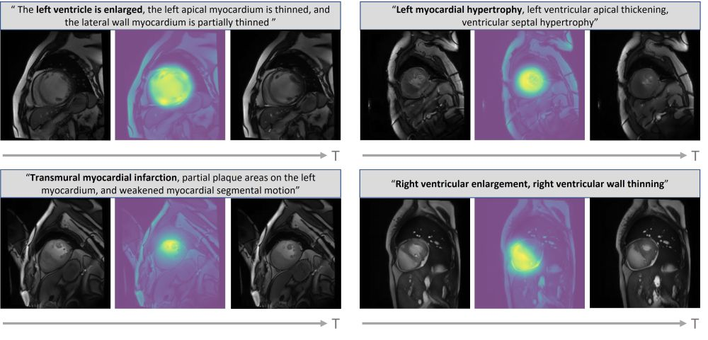
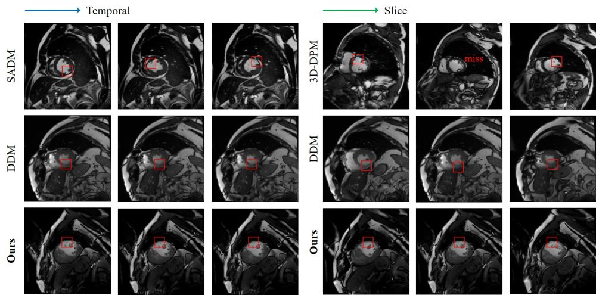
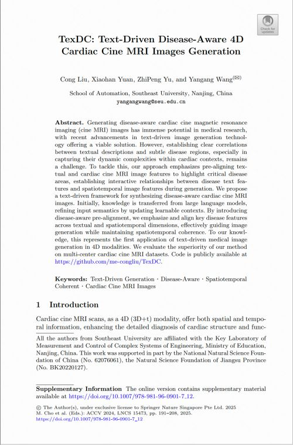

Asian Conference on Computer Vision (ACCV)
TexDC: Text-Driven Disease-Aware 4D Cardiac Cine MRI Images Generation

Our disease-aware and spatiotemporal sequence generation results.
Two frames of the sequence are shown, along the temporal dimension, with attention weights of disease-related text keywords (bold) visualized on the images, demonstrating strong visual-textual consistency. Abstract
Generating disease-aware cardiac cine magnetic resonance imaging (cine MRI) images has immense potential in medical research, with recent advancements in text-driven image generation technology offering a viable solution.However, establishing clear correlations between textual descriptions and subtle disease regions, especially in capturing their dynamic complexities within cardiac contexts, remains a challenge.To tackle this, our approach emphasizes
pre-aligning
textual and cardiac cine MRI image features to highlight critical disease areas, establishing interactive relationships between disease text features and spatiotemporal image features during generation.We propose a text-driven framework for synthesizing disease-aware cardiac cine MRI images. Initially, knowledge is transferred from large language models, refining input semantics by updating learnable contexts. By introducing disease-aware pre-alignment, we emphasize and align key disease features across textual and spatiotemporal dimensions, effectively guiding image generation while maintaining spatiotemporal coherence.To our knowledge, this represents the first application of text-driven medical image generation in 4D modalities.We evaluate the superiority of our method on multi-center cardiac cine MRI datasets. Running Code
Here, we release the source code. The rights to copy, distribute, and use the code are being given access to are under the control of Yangang Wang, director of the Vision and Cognition Lab, Southeast University. In this case, credit must be given to: *TexDC: Text-Driven Disease-Aware 4D Cardiac Cine MRI Images Generation*.
Any commercial use is not allowed
. I am very glad to receive your feedbacks about this code.
Results

Materials
|

Related links
|
|
Reference
Cong Liu, Xiaohan Yuan, Zhipeng Yu and Yangang Wang. "Texdc: Text-driven disease-aware 4d cardiac cine mri images generation." Proceedings of the Asian Conference on Computer Vision. 2024.
Acknowledgments: This work was supported in part by the National Natural Science Foundation of China (No. 62076061), the Natural Science Foundation of Jiangsu Province (No. BK20220127).